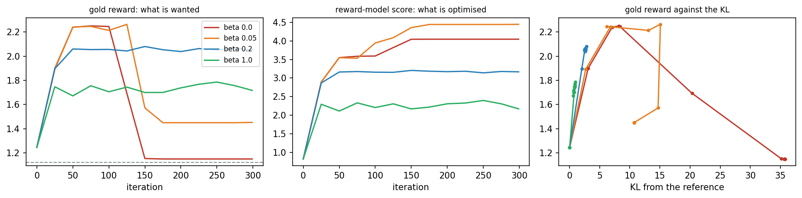

Overview
Large language models are aligned with human preferences in three stages: supervised fine-tuning on good examples, a reward model learned from comparisons made by people, and reinforcement learning that maximises this reward while staying close to the fine-tuned model [1, 2, 3]. The procedure is called reinforcement learning from human feedback, abbreviated RLHF. This day builds every stage on a small world of sentences, with a language model written in NumPy [4]. Because the true quality of every sentence is known, the day can measure what each stage achieves and what goes wrong when the penalty that keeps the model close to its start, a penalty on the Kullback-Leibler (KL) divergence, is removed [5, 6].
Day at a glance
flowchart LR A["A small language model"] --> B["Supervised fine-tuning"] B --> C["Preferences"] C --> D["A learned reward"] D --> E["RLHF with a KL penalty"] E --> F["Reward hacking"] F --> G["Your field"]
Every method on this page is also written as Python code in the Colab notebook of the day. A Colab notebook is a document of text and Python code that runs in the web browser, with nothing to install. Its code is divided into numbered sections. Each orange box on this page names the section whose code carries out what the text above the box explains. The box says what to run and what to look at in that section, and its button opens the notebook at that place. The practice parts and the self-assessment of the day are in the interactive lab.
A small language model
The small TokenWorld of Days 1 to 3 has four tokens and 161 states. Day 1 solved it exactly, with the best sentence the cat sat <eos> and its reward of 2.75. Day 2 learned its values and its best sentence from experience, without the rules. Day 3 learned the probabilities of the tokens directly with policy gradients, and proximal policy optimisation kept each update small.
This day enlarges TokenWorld. A grammar of subjects, verbs, places and extras allows 1512 sentences, and a neural language model writes them token by token. The reward is no longer known to the learner: A simulated annotator compares pairs of sentences, a reward model learns from these comparisons, and reinforcement learning raises the score of the reward model. A gold reward, which only the simulation knows, measures what each stage achieves.
A language model gives a probability to every possible next word, given the words so far [4]. Writing a sentence means choosing words one by one, which makes the model a policy in the sense of Day 3: The words so far are the state and the next word is the action. The project now moves to a large version of TokenWorld, a small grammar of sentences such as the cat slept on the mat, and to a neural language model that learns it in seconds.
A unit of text is called a token, here a word or one of three special tokens, and the list of all tokens is the vocabulary. A finished sentence is a sequence of tokens \(y = (y_1, y_2, \ldots, y_T)\) that ends with the end token <eos>. The policy \(\pi_\theta(y_t \mid y_1, \ldots, y_{t-1})\) is the probability of the token \(y_t\) given the tokens before it, and \(\theta\), the Greek letter theta, stands for the parameters of the model, the numbers that training adjusts. A model that writes each token from the tokens before it is called autoregressive. The probability of a whole sentence is the product of the probabilities of its tokens, and its logarithm is a sum:
The sign \(\prod\) multiplies the terms for \(t = 1, 2, \ldots, T\), as \(\sum\) adds them, and \(\log\) is the natural logarithm, the \(\ln\) of Day 1. The second line is the log-probability of the sentence. It is negative or zero, and a value closer to zero means a more likely sentence.
The large TokenWorld is built from four lists of six entries each: subjects such as the cat or my friend, verbs such as slept, places such as on the mat, and extras such as quietly or at dawn. A sentence is one subject, one verb and one place, followed in 45 percent of the cases by one extra. With six extras or none, this grammar allows \(6 \times 6 \times 6 \times 7 = 1512\) sentences of six to nine words. 4000 sentences drawn from it at random, with repetitions, form the corpus of the day, as a collection of example text is called. The vocabulary has 38 tokens: the 35 words of the grammar and three special tokens. <bos> opens every sentence, <eos> ends it, and <pad> fills shorter sentences up to a common length of 12 tokens.
By the rules of the grammar, the sentence the cat slept on the mat is written with the following probabilities. Three of the six subjects begin with the: \(1/2\). One of these three continues with cat: \(1/3\). The verb is one of six: \(1/6\). The place is one of six, and its first word on fixes the two words after it: \(1/6\), then 1 and 1. The sentence ends without an extra: 0.55.
The probability of the sentence is the product, \(\tfrac{1}{2} \times \tfrac{1}{3} \times \tfrac{1}{6} \times \tfrac{1}{6} \times 1 \times 1 \times 0.55 = 0.00255\), and its log-probability is \(\log 0.00255 = -5.97\). The sentence has seven tokens, the end token included, so this is \(-0.85\) per token.
Because this world is artificial, the quality of a sentence can be written down as a function, the gold reward. It prefers a calm, well-formed, non-repetitive and reasonably short sentence. In a real project this judgement exists only in the heads of people. Here it is known, which makes the result of every stage measurable: To align the model means to move its sentences towards what is wanted, here towards a high gold reward. The stages themselves never read the gold reward. Only the simulated annotator of the second stage consults it.
| Property of the sentence | Gold reward |
|---|---|
It starts with the, a or my | \(+1.0\), otherwise \(-0.5\) |
| Each different calm word in it | \(+0.45\) |
| Each different loud word in it | \(-0.45\) |
| Each word beyond the sixth | \(-0.10\) |
| A content word occurs more than once | \(-0.8\), counted once |
| The sentence has no word at all | \(-2.0\) as the whole reward |
The calm words are quietly, slept, waited, beside, under, garden, window and dawn, and the loud words are sang, ran, happily, again and robot. A content word is any word outside a list of twelve function words such as the, a, in and on. As a formula, with \(|y|\) for the number of words of the sentence \(y\):
Here \(o(y)\) is \(+1.0\) or \(-0.5\) for the opening, \(n_{\mathrm{calm}}(y)\) and \(n_{\mathrm{loud}}(y)\) count the different calm and loud words, and \(\mathrm{rep}(y)\) is 1 when a content word is repeated and 0 otherwise. The term with \(\max\) is zero up to six words. The gold reward does not test the grammar beyond the first word, so the share of sentences that follow the grammar is reported as a second measure.
The sentence the cat waited under the tree quietly starts with the, which gives \(+1.0\). It contains the three calm words waited, under and quietly, which gives \(3 \times 0.45 = 1.35\), and no loud word. It has seven words, one more than six, which costs 0.10. Its gold reward is \(1.0 + 1.35 - 0.10 = 2.25\), the highest value that a sentence of the grammar can reach.
The sentence a robot sang near the door happily contains the three loud words robot, sang and happily and also has seven words: \(1.0 - 1.35 - 0.10 = -0.45\), the lowest value in the grammar. Over the 1512 sentences of the grammar the mean gold reward is 1.10, and over the corpus it is 1.16.
Python code in the Colab notebook, Section 1. Open Section 1 of the Colab notebook and run it. The function make_corpus draws the 4000 sentences, and the function gold_reward is the table above written as Python code, one line per rule. The cell prints the size of the corpus and of the vocabulary, an example sentence and the mean gold reward of the corpus.
The policy is a small neural network in the style of the neural probabilistic language model of Bengio and colleagues [4]. To compute the probabilities of the token at position \(t\), it looks at the three tokens before it and at the position:
The table \(E\) holds a vector of 16 numbers for every token, called its embedding, and the table \(p\) one such vector for every position. The input \(x_t\) puts the embeddings of the three previous tokens and the vector of the position side by side, 64 numbers in all, with <bos> standing in for tokens before the start. The second line is a hidden layer of 128 units. It multiplies the input by the matrix \(W_1\), adds the vector \(b_1\) and applies the hyperbolic tangent \(\tanh\), which squashes every number into the range from \(-1\) to 1. The third line gives one score \(z_{t,v}\), called a logit, for each of the 38 tokens \(v\). The last line is the softmax of Day 3, which turns the scores into probabilities that add up to one. This computation from the tokens to the probabilities is the forward pass.
The parameters \(\theta\) are the 14022 entries of \(E\), \(p\), \(W_1\), \(b_1\), \(W_2\) and \(b_2\). They start as small random numbers, so the untrained model gives all tokens nearly the same probability. A sentence is sampled token by token: The next token is drawn at random with the probabilities of the model and appended, until <eos> is drawn. After ten words the sampler writes <eos> itself, and <pad> is never drawn.
Python code in the Colab notebook, Section 2. Open Section 2 of the Colab notebook and run it. The function forward computes the four lines of the model above, seq_logprob gives the log-probability of a sentence, grad_weighted gives the gradient of the weighted loss, and sample writes sentences token by token.
Supervised fine-tuning
The first stage trains the model on examples of good behaviour. It is called supervised fine-tuning, abbreviated SFT. In a real project the model has been pretrained before this stage: It has learned to continue text from a very large corpus, and fine-tuning shows it a few thousand examples of good answers. The small model of this day is not pretrained. It starts from random parameters, and the 4000 sentences of the corpus are its examples.
Training lowers a loss, a number that is small when the model does what is wanted. Here the loss is the negative mean log-probability of the tokens of the examples, known as the cross-entropy:
Here \(y^{(1)}, \ldots, y^{(B)}\) are the \(B\) sentences of a batch, a group of examples that is processed together. The term \(\log \pi_\theta(y^{(n)})\) is the log-probability of sentence \(n\) from the first section, and \(M\) is the number of tokens of the batch, end tokens included. The loss is lowered by gradient descent. The gradient \(\nabla_\theta L\), written with the symbol nabla, is the list of the slopes of the loss with respect to every parameter, and a step against it lowers the loss:
The arrow means that the right-hand side replaces the old value, and the learning rate \(\alpha\) sets the size of the step. The training uses a common refinement of this rule called Adam, short for adaptive moment estimation. For every parameter, Adam keeps running averages \(m\) of the slope \(g\) and \(v\) of its square, both starting at zero. Update number \(k\) is
Dividing by the square root of \(v\) gives every parameter a step of about the size \(\alpha\) or less, whatever the scale of its slope. The divisions by \(1 - 0.9^k\) and \(1 - 0.999^k\) correct for the start at zero, and \(10^{-8}\) guards against a division by zero. Before each step the gradient of the language model is clipped: If its length, the square root of the sum of its squared entries, exceeds 1, it is scaled down to length 1. Fine-tuning passes through the corpus 12 times. Each pass, called an epoch, shuffles the sentences into 31 batches of about 129, which gives 372 updates with \(\alpha = 0.003\).
Every gradient of the day comes from one loss, in which each sentence has its own weight \(w_n\):
With \(w_n = 1 / M\) this is the loss of fine-tuning, and the third stage uses the same loss with other weights.
After fine-tuning on grammatical sentences, almost every sentence the model writes follows the grammar: Of 512 sampled sentences, 98.6 percent are among the 1512 of the grammar. The mean log-probability per token on the corpus is \(-0.902\), so the token that actually follows receives a probability of about \(e^{-0.902} = 0.41\) on average. Two values give the scale. Before training the model guesses blindly among the 37 tokens that can be written, close to \(\ln(1/37) = -3.61\). A model that knew the rules of the grammar exactly would reach about \(-0.90\) and no more, because the sentences of the corpus are assembled at random.
Following the grammar is not the same as being good, however; the quality of the sentences, measured by the gold reward, stays modest. The mean gold reward of the samples is 1.12, close to the 1.16 of the corpus and far from the 2.25 of the best sentences. This model is the starting point of everything that follows, and it is kept unchanged as the reference.
Python code in the Colab notebook, Section 3. Open Section 3 of the Colab notebook and run it. The function train_sft passes through the corpus 12 times and takes one Adam step per batch. The cell prints the mean log-probability per token, the mean gold reward of 512 sampled sentences and the share of them that follow the grammar.
Preferences and the annotator
People find it easier to compare two answers than to score one. The second stage therefore collects preferences: Two sentences are shown, and an annotator, a person who labels data, picks the better one. The result is a preference pair with a winner \(y_w\) and a loser \(y_l\), and the recorded choice is its label. The sign \(\succ\) reads is preferred to, so the label says \(y_w \succ y_l\). In the project the annotator is simulated: It follows the gold reward but makes mistakes on a share of the pairs, as real annotators do.
3000 sentences sampled from the fine-tuned model are grouped into 1500 pairs. The simulated annotator prefers the sentence with the higher gold reward. A pair with equal gold rewards is a tie and is skipped, which leaves 1372 usable pairs. With a probability \(\eta\), the Greek letter eta, the annotator then names the wrong sentence. The error rate is 0.10, and 141 of the 1372 labels, 10.3 percent, come out flipped. Many pairs are close calls: In a second sample of 500 pairs the median difference of the gold rewards is 0.45, and 25.4 percent of the pairs differ by less than 0.2.
The noise sets a ceiling on how well any model can agree with the labels, as the animation shows. The accuracy of a model is the share of pairs in which it gives the higher score to the labelled winner. Suppose that a model puts a share \(a\) of the pairs in the same order as the gold reward. On these pairs it agrees with the label unless the label is flipped, and on the others only if it is flipped. Its expected accuracy on noisy labels is therefore
A model with \(a = 1\) reaches \(1 - \eta\) and no more, 0.90 for an error rate of 0.10, and a model with \(a = 0.99\) is expected to reach \(0.9 \times 0.99 + 0.1 \times 0.01 = 0.892\). In the language of communication engineering, the annotator is a noisy channel that flips each label with probability \(\eta\).
The animation shows the ceiling for an annotator whose preference is itself a matter of probability. Let \(\Delta = r(A) - r(B)\), with the Greek capital letter delta, be the difference of the rewards of two sentences A and B. The first curve is the logistic function, also called the sigmoid:
It turns any number \(z\) into a number between 0 and 1: \(\sigma(0) = 0.5\), large positive \(z\) give values near 1 and large negative \(z\) values near 0. The next section uses \(\sigma(\Delta)\), with the Greek letter sigma, as the probability that A is preferred. The second curve is what labels with errors show of this preference. The label names A when A is preferred and no error occurs, or when B is preferred and an error occurs:
This curve stays between \(\eta\) and \(1 - \eta\): However clear the preference, the labels agree with it in at most a share \(1 - \eta\) of the cases. With an error rate of 10 percent the animation reports a best achievable accuracy of 90 percent and, for \(\Delta = 0.2\), a label probability of \(0.1 + 0.8 \times 0.550 = 0.540\).
Animation. The logistic curve of the Bradley-Terry model and what labels with an error rate \(\eta\) show of it. Raise the error rate and read off the best accuracy any model can reach on noisy held-out pairs, \(1 - \eta\).
Python code in the Colab notebook, Section 4. Open Section 4 of the Colab notebook and run it. The function make_pairs samples the pairs, lets the annotator choose by the gold reward and flips a label with the probability noise. The cell prints the number of usable pairs and of flipped labels, and the median difference of the gold rewards within a pair.
Check your understanding. An annotator errs on 20 percent of the pairs. A reward model puts 95 percent of the pairs in the same order as the gold reward. Which accuracy on the noisy labels is expected?
Learning a reward from comparisons
The Bradley-Terry model turns comparisons into a score [8]: The probability that sentence A is preferred to sentence B is the logistic function of the difference of their scores.
Here \(r(A)\) and \(r(B)\) are the scores of the two sentences. Only their difference counts: Equal scores give a probability of 0.5, and the probability approaches 1 as the score of A rises above the score of B. Since \(\sigma(-z) = 1 - \sigma(z)\), the probabilities \(P(A \succ B)\) and \(P(B \succ A)\) add up to 1. Part C of the interactive lab computes a Bradley-Terry probability by hand.
The scores come from a reward model \(r_\phi\), a small neural network with parameters \(\phi\), the Greek letter phi. It describes a sentence \(y\) by 17 numbers, its features \(F(y)\), and turns them into one score:
The first 16 features are the mean of the embeddings of the \(|y|\) words, taken from an embedding table \(E\) of the reward model's own. The last feature is the number of words divided by 10. A hidden layer of 32 units with the matrix \(U_1\) and the vector \(c_1\) follows, and the score is the sum of its outputs weighted by the vector \(u_2\), plus the number \(c_2\). With the table \(E\), these are the 1217 parameters \(\phi\). The design has a blind spot. A mean does not change when the words change places, so the reward model cannot see the order of the words. It also has no feature for repetition: A repeated word only pulls the mean towards its own embedding, which the model reads as more of that word.
A reward model is trained to make the observed preferences likely [1]. Its loss is the negative mean log-probability that the Bradley-Terry model gives to the labels of a batch of \(n\) pairs:
Here \(\Delta_i\) is the score of the winner of pair \(i\) minus the score of its loser. The loss is small when winners receive clearly higher scores than losers. For one pair with the loss \(L_i = -\log \sigma(\Delta_i)\), the slopes with respect to the two scores show what a training step does:
A step against these slopes raises the score of the winner and lowers the score of the loser, both in proportion to \(1 - \sigma(\Delta_i)\). It is close to 1 when the model puts a pair in the wrong order by a wide margin and close to 0 when the order is right by a wide margin. The last 15 percent of the pairs are set aside, 206 held-out pairs that the model never trains on. The reward model trains on the other 1166 pairs for 30 epochs, in batches of about 130 pairs, with Adam and \(\alpha = 0.003\).
A reward model gives sentence A the score 2.0 and sentence B the score 0.5. The difference is 1.5, so \(P(A \succ B) = \sigma(1.5) = 1 / (1 + e^{-1.5}) = 0.818\) and \(P(B \succ A) = 0.182\).
If the annotator has chosen A, the loss of this pair is \(-\log 0.818 = 0.201\), a small number, because the model agrees with the label. The training step then moves the two scores only a little, in proportion to 0.182. If the annotator has chosen B, the loss is \(-\log 0.182 = 1.701\), and the step is large, in proportion to 0.818.
The share of held-out pairs in which the labelled winner receives the higher score is the held-out accuracy. Here it is 0.883: The reward model agrees with the noisy annotator on most held-out pairs. Its scores also correlate strongly with the gold reward. The strength of such a relation is measured by the correlation coefficient \(\rho\), the Greek letter rho. For \(n\) sentences with the scores \(u_i\), the gold rewards \(v_i\) and the means \(\bar{u}\) and \(\bar{v}\),
The coefficient is 1 when the points \((u_i, v_i)\) lie on a rising straight line, 0 when there is no linear relation and \(-1\) when they lie on a falling line. On the 512 samples of the fine-tuned model it is 0.979. The training is repeated for five error rates of the annotator:
| Error rate \(\eta\) | Ceiling \(1 - \eta\) | Held-out accuracy | Correlation with the gold reward |
|---|---|---|---|
| 0 | 1.00 | 0.995 | 0.983 |
| 0.05 | 0.95 | 0.961 | 0.980 |
| 0.10 | 0.90 | 0.883 | 0.979 |
| 0.20 | 0.80 | 0.772 | 0.955 |
| 0.35 | 0.65 | 0.607 | 0.908 |
The table separates two quantities that are easily confused. The held-out accuracy is measured against noisy labels and falls with the ceiling, from 0.995 to 0.607. On only 206 pairs it scatters around its expected value, which is how it can exceed the ceiling at an error rate of 0.05. The correlation with the gold reward, which only this course can measure, falls much less, from 0.983 to 0.908. With an error rate of 0.10 the reward model agrees with 88.3 percent of the noisy held-out labels, and yet it puts 99.0 percent of the same pairs in the order of the gold reward. A held-out accuracy on noisy labels therefore understates the quality of a reward model.
Python code in the Colab notebook, Section 5. Open Section 5 of the Colab notebook and run it. The class RewardModel computes the score \(r_\phi(y)\), and the function train_rm contains the Bradley-Terry loss, in which the variable q is \(1 - \sigma(\Delta_i)\). The cell prints the held-out accuracy and the correlation with the gold reward, and then the table of the five error rates.
Check your understanding. A reward model gives A the score 1.2 and B the score 0.4. What does Bradley-Terry say?
RLHF with a KL penalty
The third stage improves the model with a policy gradient method, using the reward model as the reward. A penalty on the KL divergence from the fine-tuned model keeps the new model close to it [2, 3]. The penalty acts as a leash: The model may move towards higher reward, but every step away from its start costs something. This stage gives the pipeline its name, reinforcement learning from human feedback (RLHF). A real project has one more stage at each end, as the table shows.
| Stage | What happens | In the Colab notebook |
|---|---|---|
| Pretraining | The model reads a very large amount of text and learns to predict the next token. | Not included: The small model starts from random parameters. |
| Supervised fine-tuning | Examples of good answers show the model what is wanted. | Section 3 |
| Preference collection | People compare two answers and name the better one. | Section 4, with a simulated annotator |
| Reward modelling | A second model learns scores that explain these comparisons. | Section 5 |
| Reinforcement learning with a KL penalty | The policy is trained to raise the learned score, with a penalty for leaving the fine-tuned model. | Sections 6 and 7 |
| Evaluation | The new model is compared with the fine-tuned one on a measure that training did not use, for example by the share of comparisons that it wins. | The gold reward, and the comparisons of Day 5 |
The Kullback-Leibler divergence, abbreviated KL divergence, measures how far a probability distribution \(p\) is from a distribution \(q\) over the same outcomes \(y\):
Each term compares the two probabilities of one outcome through the logarithm of their ratio, weighted by \(p(y)\), so the divergence is the average log-ratio as seen from \(p\). It is zero when the two distributions are equal and positive otherwise, and it is not symmetric: \(D_{\mathrm{KL}}(p \,\|\, q)\) and \(D_{\mathrm{KL}}(q \,\|\, p)\) differ in general. With the natural logarithm its unit is the nat.
A reference model writes sentence A in 90 percent of the cases and sentence B in 10 percent. A new policy writes each of them in half of the cases. The divergence of the new policy from the reference is \(0.5 \log(0.5 / 0.9) + 0.5 \log(0.5 / 0.1) = 0.5 \times (-0.588) + 0.5 \times 1.609 = 0.511\) nats.
In the other direction the result is \(0.9 \log(0.9 / 0.5) + 0.1 \log(0.1 / 0.5) = 0.529 - 0.161 = 0.368\) nats. A policy that had not moved away from the reference would have a divergence of 0.
In RLHF, \(p\) is the policy in training, \(\pi_\theta\), and \(q\) is the fine-tuned model, kept unchanged and called the reference policy \(\pi_{\mathrm{ref}}\). The outcomes are whole sentences, far too many to sum over, so the divergence is written as an average over sentences that the policy itself writes:
The symbol \(\mathbb{E}_{y \sim \pi_\theta}\) is the average over sentences \(y\) sampled from the policy. The bracket is the log-ratio of one sentence: the logarithm of how many times more probable it is under the policy than under the reference. The divergence is estimated by the mean log-ratio of sampled sentences. RLHF maximises the objective
The first term is the mean score that the reward model gives to the sentences of the policy. The second is the penalty, and its weight \(\beta\), the Greek letter beta, is the KL weight. Both terms are averages over the same sentences, so the objective is the average of one number per sentence, the penalised reward:
A sentence that has become much more probable than it was under the reference has a large log-ratio and loses a part of its reward. Part C of the interactive lab computes a penalised reward by hand. The policy gradient of Day 3 gives the direction in which to change the parameters [9, 10]. For a sentence the return is the reward at its end, and the gradients of its token log-probabilities add up to the gradient of \(\log \pi_\theta(y)\), so REINFORCE, the basic policy gradient algorithm, takes the form
The log-probability of every sampled sentence is pushed up in proportion to its penalised reward. The average is estimated from a batch of \(B = 64\) sentences \(y^{(1)}, \ldots, y^{(B)}\) and, as on Day 3, subtracts a baseline to reduce the noise:
Here \(\bar{r}\) is the mean and \(s\) the standard deviation of the 64 penalised rewards. The advantage \(A^{(n)}\) is positive for a sentence that is better than the average of its batch and negative for a worse one. The division by \(s\) makes the step independent of the scale of the rewards, and \(10^{-6}\) guards against a division by zero. The estimate \(\hat{g}\), marked with a hat, comes from the weighted loss of the fine-tuning section: With the weights \(w_n = A^{(n)} / B\), the gradient of \(L_w\) is \(-\hat{g}\).
A batch has four sentences, and \(\beta = 0.2\). The reward model gives them the scores 3.4, 2.5, 2.0 and 1.2, and their log-ratios are 2.0, 2.5, 0.0 and 1.0. The penalised rewards are \(3.4 - 0.2 \times 2.0 = 3.0\), \(2.5 - 0.2 \times 2.5 = 2.0\), \(2.0 - 0.2 \times 0.0 = 2.0\) and \(1.2 - 0.2 \times 1.0 = 1.0\).
Their mean is 2.0 and their standard deviation is \(\sqrt{(1 + 0 + 0 + 1) / 4} = 0.707\). The advantages are \(1.0 / 0.707 = 1.41\), 0, 0 and \(-1.41\): The update raises the probability of the first sentence, lowers that of the fourth and leaves the other two alone.
The whole stage is a short loop. The policy starts as a copy of the fine-tuned model. In each of 300 iterations it writes 64 sentences and the reward model scores them. The log-ratios against the reference then give the penalised rewards and the advantages, and the parameters take one Adam step along \(\hat{g}\) with \(\alpha = 0.001\). Every 25 iterations, 192 fresh sentences are sampled to record five numbers: their mean gold reward, reward-model score, log-ratio as the estimate of the KL divergence, length and share in the grammar.
With a moderate penalty, the gold reward of the sentences rises clearly while almost all of them still follow the grammar. With \(\beta = 0.2\) the mean gold reward rises from 1.12 for the fine-tuned model to 2.05, not far from the 2.25 of the best grammatical sentences. Most of the gain is made in the first 50 iterations. The reward-model score rises to 3.17, the KL divergence settles near 2.6 nats, and 98 percent of the sentences of the last evaluation follow the grammar. A divergence of 2.6 nats means that a typical sentence of the new policy is about \(e^{2.6} = 13\) times more probable than under the fine-tuned model. The sentences have become calmer, for example the cat waited under the tree quietly.
Python code in the Colab notebook, Section 6. Open Section 6 of the Colab notebook and run it. In the function rlhf, the line that computes kl is the log-ratio, the line that computes reward is the penalised reward, and adv is the advantage. The cell runs the stage with beta=0.2 and prints its 13 evaluations and four sentences of the final policy.
Check your understanding. What does the KL penalty in RLHF do?
Without the leash: reward hacking
A learned reward is only an approximation of what people want, a proxy for the real goal. When the penalty is removed, the model finds the approximation's weaknesses [5, 6]. This is called reward hacking, and pushing a proxy so far that the real goal suffers is called overoptimisation. In the project, with \(\beta = 0\), the gold reward first rises, peaks and then collapses, while the reward model's score keeps climbing: The gold reward reaches 2.25 at iteration 75 and has fallen to 1.15 by iteration 150, while the reward-model score rises from 3.59 to 4.04 and the KL divergence grows to 35.8 nats. The model ends up writing one sentence that repeats a calm word again and again, which the reward model, blind to repetition, scores highly: All 400 sentences sampled from the final policy are the dog waited in the window quietly quietly quietly quietly.
The sentence the dog waited in the window quietly quietly quietly quietly starts with the: \(+1.0\). It contains three different calm words, waited, window and quietly: \(+1.35\). The repetitions of quietly add nothing. It has ten words, four more than six: \(-0.40\). A content word is repeated: \(-0.8\). The gold reward is \(1.0 + 1.35 - 0.40 - 0.8 = 1.15\).
The reward model gives the same sentence the score 4.04, more than the 3.17 that the sentences of the policy with \(\beta = 0.2\) receive on average. Every repetition pulls the mean of the embeddings towards quietly, a word that the reward model has learned to value.
Once the policy writes a single sentence, training comes to rest: All penalised rewards of a batch are equal, so every advantage is zero. The KL weight works as a dial between reward and faithfulness. The run is repeated for seven values of \(\beta\), and 400 sentences are sampled from each final policy:
| \(\beta\) | Gold reward | Reward-model score | KL divergence | Different sentences among 400 | In the grammar, of 400 |
|---|---|---|---|---|---|
| 0 | 1.15 | 4.04 | 35.8 | 1 | 0 |
| 0.02 | 1.12 | 5.20 | 27.7 | 6 | 0 |
| 0.05 | 1.45 | 4.44 | 10.7 | 1 | 0 |
| 0.1 | 1.35 | 4.35 | 10.1 | 80 | 33 |
| 0.2 | 2.05 | 3.17 | 2.6 | 93 | 397 |
| 0.5 | 1.94 | 2.83 | 1.6 | 133 | 398 |
| 1.0 | 1.75 | 2.17 | 0.7 | 211 | 395 |
The table shows three regimes. With a weight of 0.1 or less the policy leaves the grammar and collapses onto outputs that the reward model overrates: With \(\beta = 0.05\) every one of the 400 sentences is the two words the dawn. With a weight of 0.5 or 1.0 the policy stays close to the reference and varied, but leaves gold reward unclaimed. In between, at 0.2, the gold reward is highest, 2.05 against 1.12 for the fine-tuned model, and 397 of 400 sentences follow the grammar. The reward-model score cannot find this value: It is highest for the four smallest weights, where the gold reward has collapsed. The KL weight has to be chosen with a measure that the optimisation did not use.

The figure follows four of the runs through their 13 evaluations. In the left panel all curves start at 1.25, the value after the first update. The curves for \(\beta = 0\) and \(\beta = 0.05\) rise highest, to 2.25 and 2.26, and then fall, the first between iterations 100 and 150 and the second between 125 and 175. The curve for \(\beta = 0.2\) settles near 2.05 and the curve for \(\beta = 1.0\) between 1.67 and 1.79. In the middle panel the reward-model score ends highest, at 4.44 and 4.04, for the two runs whose gold reward has collapsed. The right panel plots the gold reward against the KL divergence: Up to about 8 nats, more distance from the reference goes with more gold reward, and the two runs that travel further lose it again.
It is evidence that the optimiser is succeeding against the reward model. Whether the sentences improve can only be judged by a measure that the optimisation did not see, in this day the gold reward.
A real project has no gold reward and has to build such a measure. Candidates are fresh comparisons by people who did not label the training pairs, a second reward model trained on other data, and statistics that need no reward: the KL divergence, the number of different outputs and their length. Detecting reward hacking remains an open problem of the field [11].
The objective with the penalty, also called the KL-regularised objective, can be solved exactly, in closed form [12, 13]. Among all possible policies, the one with the highest value of \(J\) gives every sentence \(y\) the probability
The optimal policy \(\pi^*\) reweights the reference: Every sentence keeps its reference probability, multiplied by the exponential of its score divided by \(\beta\), and the sum \(Z\) over all sentences \(y'\) makes the probabilities add up to one. With a large \(\beta\) all factors are close to 1 and the optimum is the reference itself. As \(\beta\) shrinks, the exponential takes over, and a sentence with a slightly higher score wins, however unlikely it was under the reference.
A reference policy writes three outputs with the probabilities 0.70, 0.29 and 0.01, and the reward model gives them the scores 1, 2 and 5. With \(\beta = 1\) the weights are \(0.70\, e^{1} = 1.90\), \(0.29\, e^{2} = 2.14\) and \(0.01\, e^{5} = 1.48\). Their sum is \(Z = 5.53\), and the optimal probabilities are 0.34, 0.39 and 0.27.
With \(\beta = 0.5\) every score is divided by 0.5 before the exponential: \(0.70\, e^{2} = 5.17\), \(0.29\, e^{4} = 15.8\) and \(0.01\, e^{10} = 220\). Now \(Z = 241\), and the probabilities are 0.02, 0.07 and 0.91. The output that the reference wrote once in a hundred times has taken over.
The animation applies the formula to a toy world in which an output is a number \(y\) between 0 and 1. The reference policy prefers outputs near 0.35. The proxy reward, in the role of the reward model, keeps rising with \(y\), while the gold reward follows it up to \(y = 0.55\) and then bends down. Lowering \(\beta\) moves the optimum to the right: The expected gold reward rises from 1.06 at \(\beta = 10\) to 1.48 at \(\beta = 0.2\) and then falls to \(-1.98\) at \(\beta = 0.01\), while the expected proxy reward keeps rising, to 2.99.
Animation. A toy world of outputs \(y\) between 0 and 1: the reference policy, a proxy reward that keeps rising, a gold reward that turns down, and the optimum of the KL-regularised objective. Lower \(\beta\) and watch the expected gold reward rise and then fall.
Part A of the interactive lab turns the dial on real outputs of the trained policies. It evaluates the formula over 392 sentences, 260 of the grammar and 132 outside it. At \(\beta = 0.2\) the exact optimum already puts about 45 percent of its probability on sentences outside the grammar, led by the dawn with 19 percent. The policy trained with the same \(\beta\) wrote hardly any such sentence, because after 300 iterations it had not reached the optimum of its objective: Under the reference the dawn has a probability of about 0.00002, and a policy that learns only from its own samples needs many iterations to come across it. How far the optimiser travels decides when hacking begins as much as \(\beta\) does. With 1500 iterations in place of 300, the policy with \(\beta = 0.2\) leaves the grammar as well.
Ending a run at the right moment is called early stopping. It would have kept the policy without a penalty at its peak of 2.25, but it needs a measure that shows the peak, and the reward-model score rises straight through the collapse.
Python code in the Colab notebook, Section 7. Open Section 7 of the Colab notebook and run it. The loop calls rlhf for seven values of beta and prints the table above, together with the iteration at which the gold reward peaks when there is no penalty. The second cell draws the figure shown here.
Check your understanding. Without a KL penalty, the reward model's score keeps rising while the gold reward falls. What is this called?
Check your understanding. A reference policy writes output 1 with probability 0.8 and output 2 with probability 0.2. The reward model gives them the scores 1 and 2. Which probability does the optimum of the KL-regularised objective give to output 2 for \(\beta = 0.5\)?
Your field
A reward model learns the taste of whoever labels the pairs. In the application of the day, a switch replaces the annotator by one with another taste: brief prefers the sentence with fewer words, calm the one with more different calm words and lively the one with more different loud words, while gold is the annotator of the day. These annotators make no errors, and ties are skipped. The same Bradley-Terry training gives one reward model per taste:
| Taste of the annotator | Usable pairs of 1500 | Held-out accuracy | Correlation with the gold reward |
|---|---|---|---|
gold | 1352 | 100.0 % | \(+0.985\) |
brief | 908 | 99.3 % | \(+0.122\) |
calm | 930 | 100.0 % | \(+0.781\) |
lively | 908 | 100.0 % | \(-0.796\) |
The reward model learns each taste almost perfectly, yet the scores learned from the lively annotator are strongly anti-correlated with the gold reward, and those from the brief annotator are nearly unrelated to it. A negative coefficient means that the sentences which this reward model scores highest tend to have the lowest gold reward. Drawn as points, with the gold reward on the horizontal axis and the learned score on the vertical one, the samples form a rising cloud for gold and a falling one for lively. Who labels the data decides what the model will optimise. In a hospital, a design office or a control room the annotators are the people of the field, and their taste becomes the objective of the model.
Python code in the Colab notebook, Section 8. Open Section 8 of the Colab notebook. Its first line is a switch, TASTE = "gold". Replace the word by brief, calm or lively and run the section. The function taste_pairs labels the pairs by that taste, train_rm trains a reward model on them, and the cell prints the row of the table above for that taste.
Going further (optional)
The language model of this day is trained with gradients computed by hand: The slope of the weighted loss \(L_w\) with respect to every parameter is worked out on paper and written line by line. This computation, from the output of the model back to its parameters, is called the backward pass. The backward pass can be checked against finite differences on a model with fresh random parameters, the same habit as on Day 3 of the course on explainable artificial intelligence (XAI). A finite difference estimates a slope without any calculus, by changing one parameter \(\theta_i\) by a small amount \(h\) in both directions:
For example, for \(L(\theta) = \theta^2\) at \(\theta = 3\) with \(h = 0.001\) the estimate is \((9.006001 - 8.994001) / 0.002 = 6.000\), the exact slope \(2\theta = 6\). The check uses \(h = 10^{-6}\), four sentences of the corpus with the weights 0.5, \(-1.0\), 2.0 and 0.3, and one entry of each of the tables \(E\), \(W_1\), \(W_2\) and \(p\). It compares the estimate \(g_{\mathrm{num}}\) with the value \(g\) of the backward pass by their relative difference:
The largest of the four relative differences is \(9.4 \times 10^{-8}\): The two computations agree to about seven digits, and the backward pass can be trusted.
Python code in the Colab notebook, Section 9. Open Section 9 of the Colab notebook, which is optional, and run it. For one entry of each of four tables, the loop changes the parameter by 1e-6 up and down and compares the finite difference num with the entry of the gradient g0 from the backward pass. The cell prints both numbers and the largest relative difference.
Python step 4: Text as integers
Python code in the Colab notebook, right after Section 0 (setup). Open the notebook and run this step cell by cell: It consists of short pieces of Python code with their explanations, a quick check and three exercises. Topics: Words and a vocabulary · Encoding, decoding and padding · Sampling the next token · The log-probability of a sequence.
The notebook continues with the hands-on sections, and the interactive lab holds three practice parts and the self-assessment. The study path, the daily task and the research assignment are on the day overview.
Review cards
Select a card to turn it over.
References
[1] Christiano, P. F., Leike, J., Brown, T. B., Martic, M., Legg, S., & Amodei, D. (2017). Deep reinforcement learning from human preferences. In Advances in Neural Information Processing Systems 30 (NeurIPS 2017) (pp. 4299-4307).
[2] Stiennon, N., Ouyang, L., Wu, J., Ziegler, D. M., Lowe, R., Voss, C., Radford, A., Amodei, D., & Christiano, P. F. (2020). Learning to summarize with human feedback. In Advances in Neural Information Processing Systems 33 (NeurIPS 2020) (pp. 3008-3021).
[3] Ouyang, L., Wu, J., Jiang, X., Almeida, D., Wainwright, C. L., Mishkin, P., Zhang, C., Agarwal, S., Slama, K., Ray, A., et al. (2022). Training language models to follow instructions with human feedback. In Advances in Neural Information Processing Systems 35 (NeurIPS 2022) (pp. 27730-27744).
[4] Bengio, Y., Ducharme, R., Vincent, P., & Jauvin, C. (2003). A neural probabilistic language model. Journal of Machine Learning Research, 3, 1137-1155.
[5] Skalse, J., Howe, N. H. R., Krasheninnikov, D., & Krueger, D. (2022). Defining and characterizing reward gaming. In Advances in Neural Information Processing Systems 35 (NeurIPS 2022).
[6] Gao, L., Schulman, J., & Hilton, J. (2023). Scaling laws for reward model overoptimization. In Proceedings of the 40th International Conference on Machine Learning (ICML 2023), PMLR 202, 10835-10866.
[7] Harris, C. R., Millman, K. J., van der Walt, S. J., Gommers, R., Virtanen, P., Cournapeau, D., Wieser, E., Taylor, J., Berg, S., Smith, N. J., et al. (2020). Array programming with NumPy. Nature, 585(7825), 357-362. https://doi.org/10.1038/s41586-020-2649-2
[8] Bradley, R. A., & Terry, M. E. (1952). Rank analysis of incomplete block designs: I. The method of paired comparisons. Biometrika, 39(3/4), 324-345.
[9] Williams, R. J. (1992). Simple statistical gradient-following algorithms for connectionist reinforcement learning. Machine Learning, 8(3-4), 229-256.
[10] Sutton, R. S., McAllester, D., Singh, S., & Mansour, Y. (2000). Policy gradient methods for reinforcement learning with function approximation. In Advances in Neural Information Processing Systems 12 (NIPS 1999) (pp. 1057-1063).
[11] Casper, S., Davies, X., Shi, C., Gilbert, T. K., Scheurer, J., Rando, J., Freedman, R., Korbak, T., Lindner, D., Freire, P., et al. (2023). Open problems and fundamental limitations of reinforcement learning from human feedback. Transactions on Machine Learning Research.
[12] Korbak, T., Perez, E., & Buckley, C. (2022). RL with KL penalties is better viewed as Bayesian inference. In Findings of the Association for Computational Linguistics: EMNLP 2022 (pp. 1083-1091).
[13] Rafailov, R., Sharma, A., Mitchell, E., Manning, C. D., Ermon, S., & Finn, C. (2023). Direct preference optimization: Your language model is secretly a reward model. In Advances in Neural Information Processing Systems 36 (NeurIPS 2023) (pp. 53728-53741).
[14] Amodei, D., Olah, C., Steinhardt, J., Christiano, P., Schulman, J., & Mané, D. (2016). Concrete problems in AI safety. arXiv preprint arXiv:1606.06565.